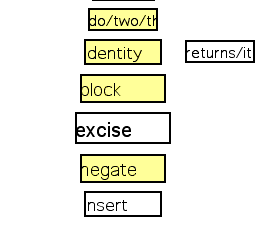
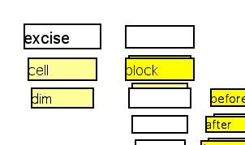
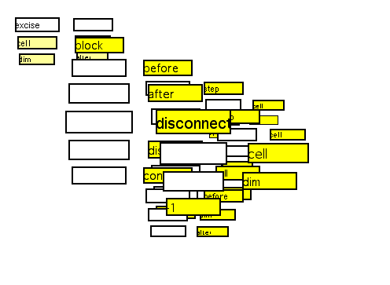
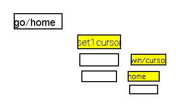
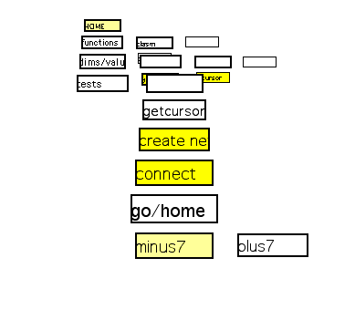
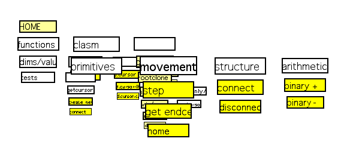
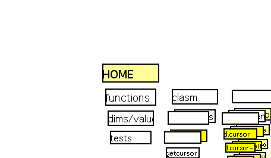

Some clasm functions

Here are some clasm functions organized on a rank. No clasm code here,
just a list of the functions on a different dimension. Clasm itself is
not aware of any organizing units bigger than a single function.
The Excise function

Rotating to a different set of dimensions, we see the code of the excise
function. Listed on the Y axis are the parameters of that function; connected
on the Z axis is the body of the function (the cloned "block" cell).

The big picture of the excise function. The function definition cell ("excise")
is now in the very upper left. The current views are unfortunately not
too tidy.
A simpler function

This function sets the cursor to point to the homecell. (The "set 1 cursor"
function is only a quick hack, though, that will break when more than one
cursor is used in the system.) Centering on the "go home" cell and hitting
Enter will execute the code and accurse the home cell.
Back to the other dimension set

Here we see the "go home" function in the other set of dimensions. It is
one of the functions used to test the more general-purpose functions written
in clasm.
The primitives

Here we see some of the primitives which are available in Clasm. The primitives,
our clasm functions, the tests, and a number of commonly needed dimensions
and values are collected in that structure, to make it easy to clone them
into clasm code.

Back to the home cell, where everything starts...